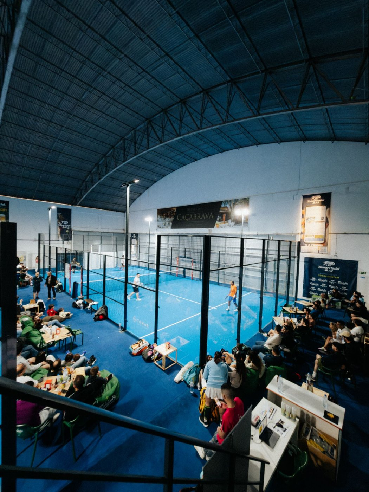

Temporada 2026 / 2027
Protocolo de
Patrocinador
e Parceiro.
e Parceiro.
Opções de visibilidade para a sua marca dentro do clube, nos torneios, na Liga de Clubes e nas nossas redes sociais. Uma audiência local ativa, presente todas as semanas.
@tomarpadel916 563 352tomarpadel.com